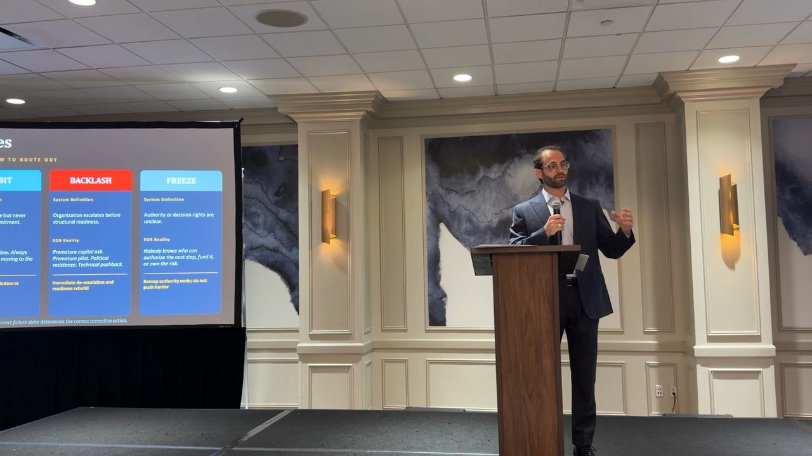

AI without a business problem
Tools and pilots are multiplying, but leadership cannot point to the work they are supposed to improve.
Technology & Decision Systems Advisor · Houston
I help leadership teams understand where work is breaking down, what their people need to succeed, and what kind of system or tool would actually help. Sometimes AI is part of the solution. It is never the point.
Stop beginning with the technology. Begin with the work.
Deal-reading service — Send us the deal. Get back the move within 24 hours.
See how it works →Where I help
They need the right information, tools, permissions, and decision structure around the work they already carry. I help organizations find the difference between useful capability and expensive noise.
Tools and pilots are multiplying, but leadership cannot point to the work they are supposed to improve.
Employees compensate for disconnected systems, repeated entry, scattered knowledge, and unclear handoffs.
The information may be strong while authority, risk ownership, timing, and the next responsible action remain unclear.
Build, buy, automate, integrate, or leave it alone: the organization needs a defensible way to choose.
Ways to work together
The first engagement creates clarity. Deeper work turns that clarity into a system your organization can actually use.
A focused examination of where work, information, technology, and decisions are breaking down—and what would create the greatest value first.
Translate the strongest opportunity into a practical system design: users, workflow, information, human oversight, risk, and implementation sequence.
See the blueprint →Independent guidance while your organization evaluates vendors, runs pilots, governs AI-enabled work, or carries consequential decisions.
See ongoing advisory →The operating principle
Most people do not need to study the machinery behind every tool they use. They need a tool designed around the job, the decision, and the consequence.
That means starting with the human system: what someone is trying to accomplish, what makes it difficult, what information matters, who owns the result, and where technology can responsibly remove friction.
Read: Stop teaching the tool. Improve the work. →
Applied in a high-stakes industry
At EOR USA 2026 in Houston, I presented Decision Intelligence for Enhanced Oil Recovery—showing how strong technical work can still stall when the structure around authority, risk, and action is incomplete.
See talks and live sessions →Premium specialization
When the work carries real operational, financial, or human consequence, the missing tool is often decision structure: a way to connect evidence, authority, risk, timing, and execution into the next responsible motion.
Information informs a decision.
Structure authorizes motion.I use Decision Systems Architecture to examine why capable teams still drift, repeat studies, escalate too early, or move without clear ownership. It is one part of the broader systems work—and the part built for the rooms where the stakes are highest.
Explore the method →Thinking you can use
Practical writing for leaders trying to make better choices about systems, AI, and consequential work.
Why the best AI-enabled system may be the one employees barely have to think about.
Read the field note → Leadership guideSeven questions to resolve before buying software, automating a workflow, or commissioning a build.
Read the guide → Decision briefA public reading of decision states, responsible motion, and the Bakken EOR record.
Read the Bakken brief →Company and founder
Ordovance builds human-centered systems that strengthen judgment—from how people learn to work with AI to how organizations make and preserve high-stakes decisions. I founded the company; AryeFisch.com is where organizations engage me directly.
You do not need to know which technology you need. Start with the work, decision, or system that is creating friction.